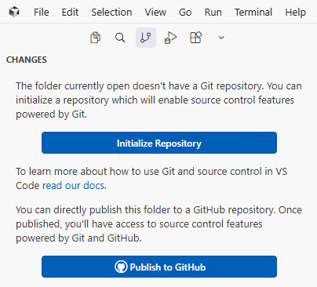

🚀 Git och GitHub Guide
Versionhantering för ditt Bokslutstider-projekt
📅 Tillbaka till Möteskalendern📚 Vad är Git och GitHub?
Git är ett versionhanteringssystem som körs lokalt på din dator.
Det håller reda på alla ändringar i dina filer och låter dig gå tillbaka till tidigare versioner.
GitHub är en webbtjänst där du kan lagra dina Git-repon online.
Det fungerar som en backup och gör det möjligt att dela kod med andra.
💡 Tänk på det som:
- Git = Ett Microsoft Word med "Spåra ändringar" och "Versionshistorik"
- GitHub = OneDrive/Google Drive för kodprojekt
🔄 Hur Git och GitHub fungerar tillsammans
Arbeta lokalt
→
Spara i Git
→
Pusha till GitHub
→
Säker backup
Viktiga begrepp:
Repository (repo)
En mapp som Git håller koll på. Den innehåller alla dina filer plus historiken av ändringar.
En mapp som Git håller koll på. Den innehåller alla dina filer plus historiken av ändringar.
Commit
En "snapshot" av dina filer vid ett visst tillfälle. Som att spara en version med ett meddelande om vad du ändrat.
En "snapshot" av dina filer vid ett visst tillfälle. Som att spara en version med ett meddelande om vad du ändrat.
Push
Skicka dina lokala commits (ändringar) till GitHub.
Skicka dina lokala commits (ändringar) till GitHub.
Pull
Hämta ändringar från GitHub till din lokala dator.
Hämta ändringar från GitHub till din lokala dator.
👥 Hantera flera GitHub-konton
⚠️ Har du flera GitHub-konton?
Om du har flera GitHub-konton (t.ex. privat och jobb), är det viktigt att veta vilket du är kopplad mot!
Om du har flera GitHub-konton (t.ex. privat och jobb), är det viktigt att veta vilket du är kopplad mot!
Kontrollera vilket konto du använder:
# Kolla ditt namn
# Kolla din e-post (detta avgör vilket GitHub-konto som används!)
git config --global user.name# Kolla din e-post (detta avgör vilket GitHub-konto som används!)
git config --global user.email
DIN NUVARANDE KONFIGURATION:
• Namn:
• E-post:
• GitHub-konto: https://github.com/kentlundgren/
• Namn:
Kent Lundgren• E-post:
lundgren.kent@gmail.com• GitHub-konto: https://github.com/kentlundgren/
Dina två GitHub-konton:
| Konto | Användning | E-post |
|---|---|---|
| kentlundgren |
AKTIV NU ✅ Personliga projekt |
lundgren.kent@gmail.com |
| lundgren9 | Poolia-projekt (jobbrelaterat) | (Annan e-post) |
Byta mellan konton:
För att byta till lundgren9-kontot (globalt för alla projekt):
git config --global user.name "Kent på Poolia"git config --global user.email "din-poolia-epost@exempel.se"
För att sätta specifikt konto BARA för detta projekt:
# Gå till projektmappen först
# Sätt lokalt för detta projekt (utan --global)
cd "d:\VåraFiler_primära_på_SSD\Kent_dokument\Data\HTML\kentlundgren_se\arbete\SK\Bokslutstider"# Sätt lokalt för detta projekt (utan --global)
git config user.name "Kent Lundgren"git config user.email "lundgren.kent@gmail.com"
💡 Tips: Använd
--global för standardkonfiguration på hela datorn.
Använd UTAN --global för att sätta specifikt för ett enda projekt.
💻 Git i Cursor (VS Code)
När du startar ett nytt projekt i Cursor ser du ibland denna dialog:

📋 Förklaring av knapparna:
🔵 "Initialize Repository"
• Kör
• Skapar ett lokalt Git-repo
• Filerna finns BARA på din dator (inte på GitHub än)
• Detta har vi redan gjort manuellt via PowerShell!
• Kör
git init i din projektmapp• Skapar ett lokalt Git-repo
• Filerna finns BARA på din dator (inte på GitHub än)
• Detta har vi redan gjort manuellt via PowerShell!
🌐 "Publish to GitHub"
• Gör ALLT på en gång:
• Skapar automatiskt ett nytt repo på GitHub
• Pushar alla filer direkt
• Enklast för nybörjare! ⭐
• Gör ALLT på en gång:
git init + skapa GitHub-repo + pusha• Skapar automatiskt ett nytt repo på GitHub
• Pushar alla filer direkt
• Enklast för nybörjare! ⭐
🤔 Vad ska du göra när du ser denna dialog?
Alternativ 1: "Publish to GitHub" (Rekommenderat för nybörjare)
✅ Fördelar:
• Snabbt och enkelt
• Cursor sköter allt automatiskt
• Perfekt för nya projekt
📝 Steg:
1. Klicka på "Publish to GitHub"
2. Logga in med ditt GitHub-konto (kentlundgren eller lundgren9)
3. Välj om repot ska vara Public eller Private
4. Cursor skapar repot och pushar alla filer
5. Klart! 🎉
✅ Fördelar:
• Snabbt och enkelt
• Cursor sköter allt automatiskt
• Perfekt för nya projekt
📝 Steg:
1. Klicka på "Publish to GitHub"
2. Logga in med ditt GitHub-konto (kentlundgren eller lundgren9)
3. Välj om repot ska vara Public eller Private
4. Cursor skapar repot och pushar alla filer
5. Klart! 🎉
Alternativ 2: "Initialize Repository" (Mer kontroll)
✅ Fördelar:
• Du har full kontroll över varje steg
• Bra för att lära sig Git
• Kan välja exakt vad som ska committas
📝 Steg:
1. Klicka på "Initialize Repository"
2. Skapa
3. Gör första commit manuellt (vi har redan gjort detta)
4. Skapa GitHub-repo manuellt på github.com
5. Koppla samman med
6. Pusha med
✅ Fördelar:
• Du har full kontroll över varje steg
• Bra för att lära sig Git
• Kan välja exakt vad som ska committas
📝 Steg:
1. Klicka på "Initialize Repository"
2. Skapa
.gitignore (vi har redan gjort detta)3. Gör första commit manuellt (vi har redan gjort detta)
4. Skapa GitHub-repo manuellt på github.com
5. Koppla samman med
git remote add origin6. Pusha med
git push -u origin main
✅ För detta projekt:
Vi har redan använt Alternativ 2! Vi har:
✅ Kört
✅ Skapat
✅ Gjort första commit
⏳ Nästa steg: Pusha till GitHub (se nedan)
✅ Kört
git init manuellt✅ Skapat
.gitignore✅ Gjort första commit
⏳ Nästa steg: Pusha till GitHub (se nedan)
🛠️ Steg-för-steg: Sätta upp ditt projekt
-
Installera Git
Ladda ner från git-scm.com och installera.# Verifiera installationen i PowerShell:
git --version -
Konfigurera Git (en gång)
Tala om vem du är:git config --global user.name "Kent Lundgren"
git config --global user.email "din.epost@exempel.se" -
Skapa ett lokalt Git-repo
Gå till din projektmapp och initiera Git:cd "d:\VåraFiler_primära_på_SSD\Kent_dokument\Data\HTML\kentlundgren_se\arbete\SK\Bokslutstider"
git init✅ Nu är mappen ett Git-repo! En dold mapp.gitskapas som lagrar historiken. -
Skapa .gitignore-fil
En fil som talar om vilka filer Git ska ignorera:# Exempel på innehåll i .gitignore:
node_modules/
.DS_Store
*.log
.env⚠️ Viktigt: .gitignore förhindrar att känsliga filer (lösenord, API-nycklar) pushas till GitHub! -
Lägg till filer i staging
Välj vilka filer som ska ingå i nästa commit:git add .# Lägger till alla filer
eller
git add index.html# Lägger till en specifik fil -
Skapa din första commit
Spara en version med ett beskrivande meddelande:git commit -m "Initial commit: Möteskalender 2026" -
Skapa ett repo på GitHub
- Gå till github.com och logga in
- Klicka på "New repository" (gröna knappen)
- Namnge den:bokslutstider
- Välj "Public" eller "Private"
- VIKTIGT: LÄGG INTE till README, .gitignore eller licens (gör detta senare)
- Klicka "Create repository" -
Koppla lokalt repo till GitHub
Koppla samman din lokala mapp med GitHub-repot:git remote add origin https://github.com/DITT-ANVÄNDARNAMN/bokslutstider.gitObservera: Byt utDITT-ANVÄNDARNAMNmot ditt riktiga GitHub-användarnamn! -
Pusha till GitHub
Skicka upp dina filer första gången:git branch -M main# Byter namn på huvudgrenen till "main"
git push -u origin main# Pushar till GitHub🎉 Klart! Nu finns dina filer på GitHub!
📅 Dagligt arbetsflöde
När du jobbar med projektet framöver, följ dessa steg:
# 1. Kontrollera status
# 2. Lägg till ändringar
# 3. Commit med meddelande
# 4. Pusha till GitHub
git status# 2. Lägg till ändringar
git add .# 3. Commit med meddelande
git commit -m "Beskrivning av vad du ändrat"# 4. Pusha till GitHub
git push
Bra commit-meddelanden:
- ✅ "Lagt till februari-månad i kalendern"
- ✅ "Fixat bug med helgdatumkontroll"
- ✅ "Uppdaterat CSS för mobilvy"
- ❌ "fix" (för vagt)
- ❌ "diverse ändringar" (inte beskrivande)
💡 Viktiga tips för att Git och GitHub ska fungera bra
1. Commit ofta!
Gör små, frekventa commits istället för stora sällan. Det gör det lättare att hitta och ångra fel.
Gör små, frekventa commits istället för stora sällan. Det gör det lättare att hitta och ångra fel.
2. Skriv tydliga commit-meddelanden
Ditt framtida jag kommer att tacka dig när du behöver hitta när en specifik ändring gjordes.
Ditt framtida jag kommer att tacka dig när du behöver hitta när en specifik ändring gjordes.
3. Pusha regelbundet
Även om du committar lokalt, kom ihåg att pusha till GitHub så du har en backup.
Även om du committar lokalt, kom ihåg att pusha till GitHub så du har en backup.
4. Använd .gitignore från start
Lägg aldrig till känslig information (lösenord, API-nycklar) i Git. Använd .gitignore!
Lägg aldrig till känslig information (lösenord, API-nycklar) i Git. Använd .gitignore!
5. Läs status före commit
Kör alltid
Kör alltid
git status innan du committar för att se exakt vad som kommer inkluderas.
6. Testa att klona
Testa ibland att klona repot till en annan mapp för att säkerställa att allt fungerar:
Testa ibland att klona repot till en annan mapp för att säkerställa att allt fungerar:
git clone https://github.com/DITT-ANVÄNDARNAMN/bokslutstider.git testmapp
🔧 Användbara Git-kommandon
# VIKTIGT: Kontrollera vilket konto du är kopplad mot
git config user.namegit config user.email
# Se historik av commits
# Se vad som ändrats (före git add)
# Ångra ändringar i en fil (före git add)
# Ta bort fil från staging (efter git add)
# Se vilka filer som ignorerats
# Hämta senaste från GitHub
git log --oneline# Se vad som ändrats (före git add)
git diff# Ångra ändringar i en fil (före git add)
git checkout -- filnamn.html# Ta bort fil från staging (efter git add)
git reset filnamn.html# Se vilka filer som ignorerats
git status --ignored# Hämta senaste från GitHub
git pull
🆘 Vanliga problem och lösningar
Problem: Cursor "står och snurrar" vid Commit & Push ⚠️ VANLIGT!
Symptom: "Commit & Push"-knappen står bara och snurrar/spinner, ingenting händer.
 Orsaker:
Orsaker:
1. Git-processen har hängt sig i bakgrunden
2. Autentisering väntar i bakgrunden (du ser inte prompten)
3. Remote är inte konfigurerad
4. Konflikt med credentials
Lösning 1: Döda hängande Git-processer (SNABBAST)
Öppna PowerShell och kör:
Detta dödar alla Git-processer. Sedan kan du:
• Starta om Cursor OCH
• Pusha manuellt via PowerShell:
Lösning 2: Pusha via PowerShell istället
Ignorera Cursor-knappen och använd PowerShell:
Lösning 3: Använd GitHub Desktop
Om problemet fortsätter, använd GitHub Desktop istället.
Det är stabilare och visar autentiseringsdialoger tydligare.
Förebyggande åtgärder:
• Konfigurera autentisering en gång för alla (Personal Access Token eller SSH)
• Använd GitHub Desktop för mer stabila pushes
• Kontrollera att remote är konfigurerad:
💡 Tips: Om det fortsätter hänga sig, stäng Cursor helt, döda Git-processer, och starta om. Sedan pusha via PowerShell eller GitHub Desktop istället för Cursor-knappen.
Orsaker:1. Git-processen har hängt sig i bakgrunden
2. Autentisering väntar i bakgrunden (du ser inte prompten)
3. Remote är inte konfigurerad
4. Konflikt med credentials
Lösning 1: Döda hängande Git-processer (SNABBAST)
Öppna PowerShell och kör:
taskkill /F /IM git.exe
• Starta om Cursor OCH
• Pusha manuellt via PowerShell:
git pushLösning 2: Pusha via PowerShell istället
Ignorera Cursor-knappen och använd PowerShell:
cd "din-projektmapp"git push
Om problemet fortsätter, använd GitHub Desktop istället.
Det är stabilare och visar autentiseringsdialoger tydligare.
Förebyggande åtgärder:
• Konfigurera autentisering en gång för alla (Personal Access Token eller SSH)
• Använd GitHub Desktop för mer stabila pushes
• Kontrollera att remote är konfigurerad:
git remote -v💡 Tips: Om det fortsätter hänga sig, stäng Cursor helt, döda Git-processer, och starta om. Sedan pusha via PowerShell eller GitHub Desktop istället för Cursor-knappen.
Problem: "Permission denied" när du pushar
Lösning: Du behöver autentisera dig mot GitHub. Använd antingen:
- Personal Access Token (rekommenderat)
- GitHub Desktop (enklare för nybörjare)
- Personal Access Token (rekommenderat)
- GitHub Desktop (enklare för nybörjare)
Problem: "Please tell me who you are"
Lösning: Kör steg 2 ovan för att konfigurera ditt namn och e-post.
Problem: COMMIT_EDITMSG öppnas - kan inte skriva i filen
Symptom: När du klickar "Commit & Push" öppnas filen
Orsak: Du klickade "Commit & Push" utan att först skriva ett commit-meddelande i Cursor's "Message"-ruta. Git försöker öppna Cursor som texteditor, men det fungerar inte korrekt.
Lösning:
1. Stäng filen
2. Döda Git-processen:
3. Stäng Cursor helt
4. Committa via PowerShell med meddelande direkt:
💡 Förebyggande: Skriv ALLTID ett commit-meddelande i Cursor's "Message"-ruta
(ovanför "Commit & Push"-knappen) INNAN du klickar på knappen. Då slipper du detta problem helt!
.git/COMMIT_EDITMSG
i Cursor, men du kan inte skriva i den. Git väntar på ett commit-meddelande.Orsak: Du klickade "Commit & Push" utan att först skriva ett commit-meddelande i Cursor's "Message"-ruta. Git försöker öppna Cursor som texteditor, men det fungerar inte korrekt.
Lösning:
1. Stäng filen
COMMIT_EDITMSG utan att spara (Ctrl+W → "Don't Save")2. Döda Git-processen:
taskkill /F /IM git.exe
4. Committa via PowerShell med meddelande direkt:
cd "din-projektmapp"git add .git commit -m "Ditt commit-meddelande här"git push
Problem: Råkat committa fel fil
Lösning: Om du INTE pushat än:
git reset HEAD~1 # Ångrar senaste commit
Problem: Fel GitHub-konto används
Lösning: Kontrollera och ändra ditt Git-konfigurerade användarnamn och e-post:
# Kontrollera nuvarande konfiguration
# Ändra till rätt konto (exempel för kentlundgren-kontot)
Observera: E-postadressen måste matcha den som är registrerad på ditt GitHub-konto!
git config --global user.namegit config --global user.email# Ändra till rätt konto (exempel för kentlundgren-kontot)
git config --global user.name "Kent Lundgren"git config --global user.email "lundgren.kent@gmail.com"
📖 Läs mer
- Git Bok (svenska)
- GitHub Dokumentation (svenska)
- GitHub Desktop - Grafiskt gränssnitt för Git
- Learn Git Branching - Interaktiv tutorial